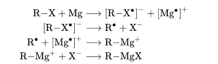

Grignard reagents or Grignard compounds are chemical compounds with the general formula RMgX(S)n, where X is a halide, R is an organic group (normally an alkyl or aryl), S is an ether, and n is usually 2. Usually, the ether groups are omitted from the formula.
Thus, two typical examples are methylmagnesium chloride (CH₃MgCl) and phenylmagnesium bromide (C₆H₅MgBr). They are a subclass of organomagnesium compounds.
Grignard compounds are popular reagents in organic synthesis for creating new carbon–carbon bonds. The carbon–magnesium bond in a Grignard reagent is a polar covalent bond. The carbon atom has a partial negative charge and acts as a nucleophile.
Grignard reagents are rarely isolated as solids. Instead, they are normally handled as solutions in solvents such as diethyl ether or tetrahydrofuran (THF) using air-free techniques.
Grignard reagents exist as complexes in which the magnesium atom is bonded to two ether ligands along with the halide and organic groups.
The discovery of the Grignard reaction in 1900 was recognized with the Nobel Prize awarded to Victor Grignard in 1912.
Grignard reagents (RMgX) are prepared by reacting an organic halide (RX, where X = Cl, Br, I) with magnesium metal (Mg) in an anhydrous ethereal solvent, such as diethyl ether or tetrahydrofuran (THF).
The general reaction is:
R–X + Mg → R–Mg–X

1. Reagents: Alkyl or aryl halides (R–X) react with magnesium turnings. Order of reactivity: I > Br > Cl.
2. Solvent: Requires an anhydrous (water-free) ether solvent (diethyl ether or THF). The ether acts as a Lewis base to stabilize the organomagnesium compound.
3. Conditions: Must be completely moisture-free (anhydrous) and typically air-free
to prevent the reagent from being destroyed:
2RMgX + H₂O → RH + MgXOH
4. Initiation: The reaction may have an induction period. It can be initiated by adding a small crystal of iodine (I₂) or a few drops of 1,2-dibromoethane to clean the magnesium surface.
1. Preparation of Ethylmagnesium Bromide
CH₃CH₂Br + Mg → CH₃CH₂MgBr
(in ether / dry ether)
(Bromoethane reacts with magnesium in diethyl ether to produce Ethylmagnesium Bromide.)
2. Preparation of Phenylmagnesium Bromide
C₆H₅Br + Mg → C₆H₅MgBr
(in tetrahydrofuran / THF)
(Bromobenzene reacts with magnesium in THF to produce Phenylmagnesium Bromide.)
3. Preparation of Methylmagnesium Chloride
CH₃Cl + Mg → CH₃MgCl
(in ether / dry ether)
(Chloromethane reacts with magnesium in ether to produce Methylmagnesium Chloride.)
Grignard reagents (RMgX, where R = alkyl/aryl and X = halogen) are highly versatile in organic synthesis. Their reactivity arises from the nucleophilic carbon bonded to magnesium, enabling formation of new C–C bonds.
Grignard reagents react with carbonyl compounds followed by acid hydrolysis to give alcohols.
Obtained using formaldehyde or ethylene oxide.
Example (Formaldehyde):
CH₃MgBr + HCHO → CH₃CH₂OMgBr → (H₃O⁺) → CH₃CH₂OH
Product: Ethanol
Example (Ethylene Oxide):
CH₃MgBr + C₂H₄O → CH₃CH₂CH₂OMgBr → (H₃O⁺) → CH₃CH₂CH₂OH
Product: Propan-1-ol
Formed from aldehydes (except formaldehyde).
Example:
CH₃MgBr + CH₃CHO → (CH₃)₂CHOMgBr → (H₃O⁺) → (CH₃)₂CHOH
Product: Propan-2-ol (Isopropyl alcohol)
Formed from ketones or esters.
From Ketone (Acetone):
CH₃MgBr + (CH₃)₂CO → (CH₃)₃COMgBr → (H₃O⁺) → (CH₃)₃COH
Product: tert-Butyl alcohol
From Ester:
Requires 2 moles of Grignard reagent; intermediate ketone forms then reacts further to give tertiary alcohol.
Reaction with carbon dioxide followed by hydrolysis gives carboxylic acids.
RMgX + CO₂ → RCOOMgX → (H₃O⁺) → RCOOH
Reaction with water or alcohol gives alkanes.
RMgX + H₂O → RH + Mg(OH)X
Ethers: Reaction with halogenated ethers.
Thiols: Reaction with sulfur followed by hydrolysis → R–SH
Used to prepare organotin, organosilicon, etc.
4RMgX + SnCl₄ → R₄Sn + 4MgXCl
Forms ketones after hydrolysis.
RMgX + R'CN → intermediate → (H₃O⁺) → R–CO–R'
Aldehydes can be prepared using specific reagents that control the reaction.
From Ethyl Formate:
HCOOC₂H₅ + RMgX → RCHO + C₂H₅OMgX
From Hydrogen Cyanide (HCN):
RMgX + H–C≡N → R–CH=N–MgX → (H₃O⁺) → R–CHO + NH₃ + Mg(OH)X
Ketones are synthesized using nitriles, acid chlorides, or amides.
From Nitriles:
RMgX + R'–C≡N → R'(R)C=N–MgX → (H₃O⁺) → R–CO–R'
From Acid Chlorides:
RMgX + R'COCl → R–CO–R' + MgXCl
Note: Controlled conditions are required to prevent formation of tertiary alcohol.
1. Grignard reagent has the general formula:
R–OH2. Grignard reagent reacts with CO₂ to give:
Alcohol3. Which solvent is used for Grignard reagent preparation?
Water